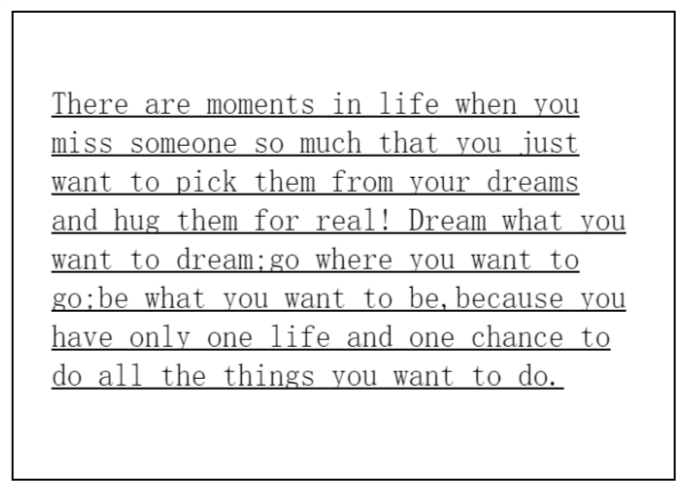
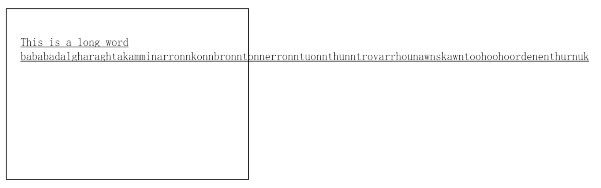
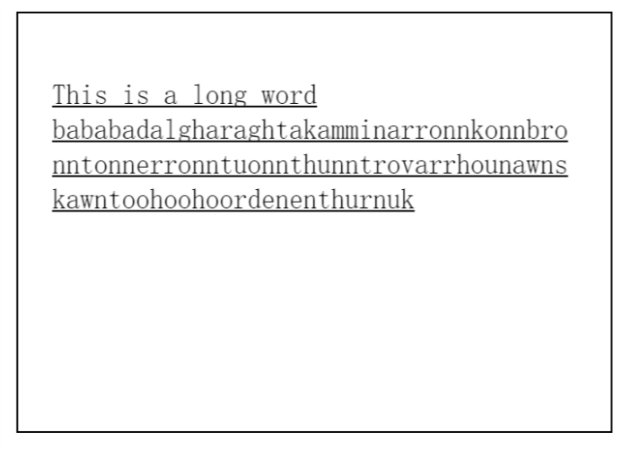
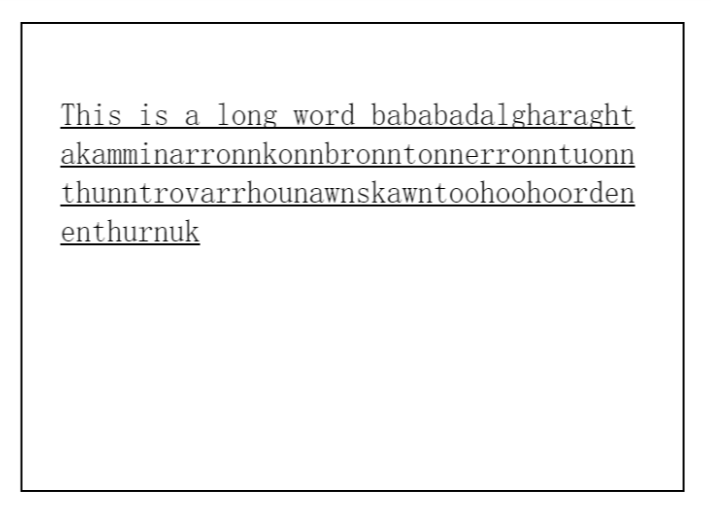

如何避免超长单词超出容器边界
我们都知道，英语单词的移行是有一定的规则的，不能随意地将一个词分到两行。所以在没有人为的干预下，浏览器会将放不下的单词移到下一行显示。

那么，会不会出现即使移行也放不下的情况呢？
bababadalgharaghtakamminarronnkonnbronntonnerronntuonnthunntrovarrhounawnskawntoohoohoordenenthurnuk——由 100个字母 组成，出现在爱尔兰作家乔埃斯(James Joyce,1882-1942)作品Finnegans Wake的扉页，代表“亚当和夏娃的堕落”。
默认情况下，浏览器是不会将这个单词断开的。这样就会出现一个问题，多出来的字母往哪儿放呢？答案是超出容器边界继续显示。

NO，这可不好！
CSS3中有一个 word-wrap 属性，就能解决这个问题。word-wrap 属性允许长单词或 URL 地址换行到下一行。
word-wrap 属性的默认值为normal，即只在允许的断字点换行。当设置了 word-wrap:break-word; 之后，浏览器就会在长单词或 URL 地址内部进行换行。

但是，仔细观察可以发现，上图的word之后出现了大片空白。前面提到，浏览器会将放不下的单词移到下一行显示。万恶的资本家擅长的是榨干最后一滴油，这里空了那么多地儿，多么可惜呀！
CSS3中还有一个word-break 属性。word-break 属性规定自动换行的处理方法。通过使用 word-break 属性，可以让浏览器实现在任意位置的换行。
它有三个值， normal，break-all和keep-all。分别规定“使用浏览器默认的换行规则”， “允许在单词内换行”和“只能在半角空格或连字符处换行”。常用的是 word-break:break-all; 即使用最粗暴方式来移行。

这样可以尽可能的节省空间，但是会降低可读性。不过反正既放不下也不认识，才懒得管他呢😂